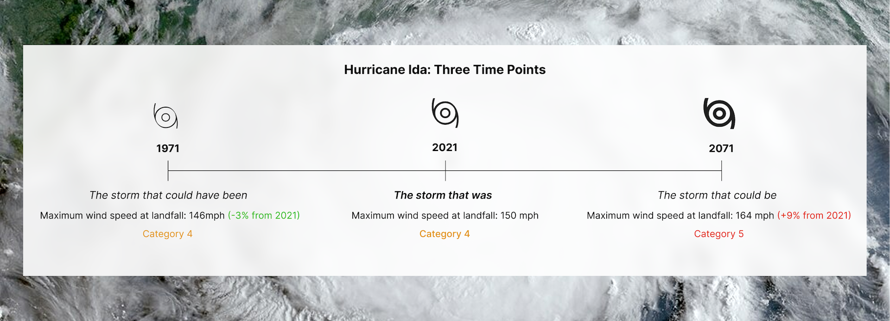

Hurricane Ida was one of the United States' ten costliest storms ever and one with deep impacts in south Louisiana. Sometimes, after a storm like Ida, people ask:
“Was that storm more severe because of climate change?”
Sometimes people also want to know about their future.
“Will a storm like Ida be more severe in the future because of climate change?”
Storm Surge Flooding Impacts Increase Because of a Changing Climate